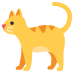
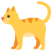
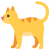
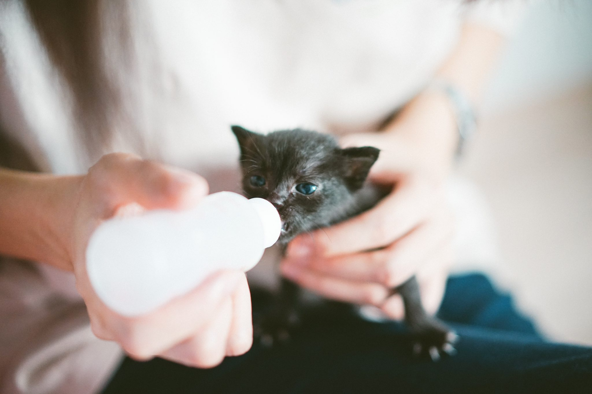

BeMyCat
 
집사의 정석

집사의 정석
 지식정보사이트,
비마이캣
지식정보사이트,
비마이캣

집사의 정석
지식정보사이트,
비마이캣
알쓸신잡
세상에 나쁜 고양이는 없다....

고양이 무는 버릇 고치는 방법

고양이의 자는 모습, 어떤 의미 일까?

꼬리로 보는 주인님의 기분
고양이 가이드
초보여도 괜찮아!

생후 0~4개월

생후 2~3주는 아기고양의 유치가 자라나는 시기이다.
태어난지 약 4개월 된 고양이는 사람 나이로 2~3세 정도로 여겨지게 되며 다른 동물에 비해 급격한 성장을 한다.
이 시기에는 노출되는 환경에 따라 고양이의 성격이 형성되며, 독립하여 생활을 시작하게 된다
고양이 먹이
0~4주까지는 표유기로 어미젖을 먹는시기이다. 초유성분이 있는 고양이 전용 분유나 우유를 먹어야 저항력과 면역력이 생긴다. 배급주기는 4~6시간 간격이다.
4주~4개월은 성장에 쓰일 칼로리가 엄청나게 필요한 시기므로 키튼사료(고칼로리)를 물이나 전용우유에 불려 줘야된다.